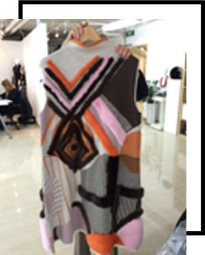

毕业于北京广播学院外语系，工作几年后，凭借对时尚和设计强烈的热爱和与生俱来的天赋，2012年远赴意大利，在著名的polimoda设计学院完成了配饰设计专业的研究生课程。毕业回国后创立首个个人品牌“mixology”。名称如此，除了取自设计师本人名字的谐音外，更重要的是因为在她看来所有的设计其实都是“the art of Mixing”，而这种理念也反映在她的设计上。各种材质，颜色的碰撞是基本的表现形式，功能主义和戏剧性的完美结合才是她最终想要表达的设计理念。
孔南南

2009年毕业于raffles design institute 同年获聘于莱佛士任教，2012年完成高级定制系列《golden age》。2012年12月创立成衣品牌lanneret，以连体裤与黑白主色系为代表。